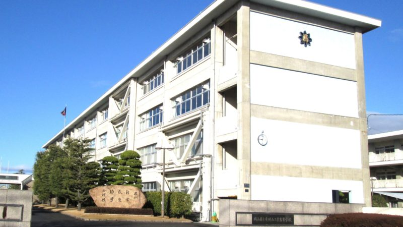

大戸井 慶伍の出身校紹介ページ(作成者：渡邊 蒼士)

学校紹介
学校名：岡山県立東岡山工業高等学校
所在地： 〒703-8217 岡山県岡山市中区土田２９０−１
設立： 1962年 創立62年
共学・別学： 男女共学
所属学科：電子機械科
電子機械化は溶接・旋盤・製図・電工などを行う
先生の名前：牧先生
部活：科学工学部
高校時代の思い出 科学工作部でのロボコンに向けた活動の日々はかけがえのない時間だったそうです。
班員からのコメント
中野：なんというか....イメージ通りって感じですよね。コンピューター部じゃないのは予想外でしたけど。
渡邊：部活動に青春を注いでいて素晴らしいと思いました。
山浦：電子機械科に科学工学部と、とても工業高校らしい高校だと思います。
その他の班員一覧
TOPに戻る